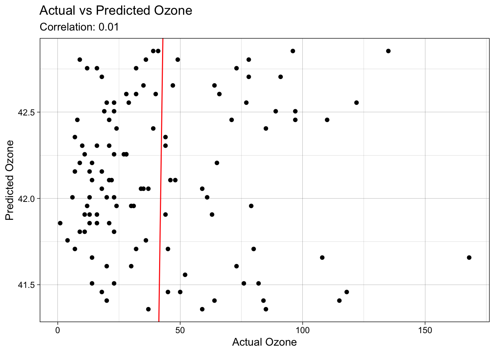

options(repos = c(CRAN = "https://cran.rstudio.com"))
install.packages("visdat")
The downloaded binary packages are in
/var/folders/8h/0dm_6_rx2936k8dntwlpr4x80000gn/T//Rtmpu7LCPR/downloaded_packageslibrary(visdat)
vis_dat(airquality)
options(repos = c(CRAN = "https://cran.rstudio.com"))
install.packages("visdat")
The downloaded binary packages are in
/var/folders/8h/0dm_6_rx2936k8dntwlpr4x80000gn/T//Rtmpu7LCPR/downloaded_packageslibrary(visdat)
vis_dat(airquality)
install.packages("broom")
The downloaded binary packages are in
/var/folders/8h/0dm_6_rx2936k8dntwlpr4x80000gn/T//Rtmpu7LCPR/downloaded_packageslibrary(broom)
broom::tidy(airquality)Warning in tidy.data.frame(airquality): Data frame tidiers are deprecated and
will be removed in an upcoming release of broom.# A tibble: 6 × 13
column n mean sd median trimmed mad min max range skew
<chr> <dbl> <dbl> <dbl> <dbl> <dbl> <dbl> <dbl> <dbl> <dbl> <dbl>
1 Ozone 116 42.1 33.0 31.5 37.8 17.5 1 168 167 NA
2 Solar.R 146 186. 90.1 205 190. 66.5 7 334 327 NA
3 Wind 153 9.96 3.52 9.7 9.87 2.3 1.7 20.7 19 0.344
4 Temp 153 77.9 9.47 79 78.3 6 56 97 41 -0.374
5 Month 153 6.99 1.42 7 6.99 1 5 9 4 -0.00237
6 Day 153 15.8 8.86 16 15.8 8 1 31 30 0.00263
# ℹ 2 more variables: kurtosis <dbl>, se <dbl>### it needs cleaning because of absent values in the dfdf <- data.frame(airquality)
df Ozone Solar.R Wind Temp Month Day
1 41 190 7.4 67 5 1
2 36 118 8.0 72 5 2
3 12 149 12.6 74 5 3
4 18 313 11.5 62 5 4
5 NA NA 14.3 56 5 5
6 28 NA 14.9 66 5 6
7 23 299 8.6 65 5 7
8 19 99 13.8 59 5 8
9 8 19 20.1 61 5 9
10 NA 194 8.6 69 5 10
11 7 NA 6.9 74 5 11
12 16 256 9.7 69 5 12
13 11 290 9.2 66 5 13
14 14 274 10.9 68 5 14
15 18 65 13.2 58 5 15
16 14 334 11.5 64 5 16
17 34 307 12.0 66 5 17
18 6 78 18.4 57 5 18
19 30 322 11.5 68 5 19
20 11 44 9.7 62 5 20
21 1 8 9.7 59 5 21
22 11 320 16.6 73 5 22
23 4 25 9.7 61 5 23
24 32 92 12.0 61 5 24
25 NA 66 16.6 57 5 25
26 NA 266 14.9 58 5 26
27 NA NA 8.0 57 5 27
28 23 13 12.0 67 5 28
29 45 252 14.9 81 5 29
30 115 223 5.7 79 5 30
31 37 279 7.4 76 5 31
32 NA 286 8.6 78 6 1
33 NA 287 9.7 74 6 2
34 NA 242 16.1 67 6 3
35 NA 186 9.2 84 6 4
36 NA 220 8.6 85 6 5
37 NA 264 14.3 79 6 6
38 29 127 9.7 82 6 7
39 NA 273 6.9 87 6 8
40 71 291 13.8 90 6 9
41 39 323 11.5 87 6 10
42 NA 259 10.9 93 6 11
43 NA 250 9.2 92 6 12
44 23 148 8.0 82 6 13
45 NA 332 13.8 80 6 14
46 NA 322 11.5 79 6 15
47 21 191 14.9 77 6 16
48 37 284 20.7 72 6 17
49 20 37 9.2 65 6 18
50 12 120 11.5 73 6 19
51 13 137 10.3 76 6 20
52 NA 150 6.3 77 6 21
53 NA 59 1.7 76 6 22
54 NA 91 4.6 76 6 23
55 NA 250 6.3 76 6 24
56 NA 135 8.0 75 6 25
57 NA 127 8.0 78 6 26
58 NA 47 10.3 73 6 27
59 NA 98 11.5 80 6 28
60 NA 31 14.9 77 6 29
61 NA 138 8.0 83 6 30
62 135 269 4.1 84 7 1
63 49 248 9.2 85 7 2
64 32 236 9.2 81 7 3
65 NA 101 10.9 84 7 4
66 64 175 4.6 83 7 5
67 40 314 10.9 83 7 6
68 77 276 5.1 88 7 7
69 97 267 6.3 92 7 8
70 97 272 5.7 92 7 9
71 85 175 7.4 89 7 10
72 NA 139 8.6 82 7 11
73 10 264 14.3 73 7 12
74 27 175 14.9 81 7 13
75 NA 291 14.9 91 7 14
76 7 48 14.3 80 7 15
77 48 260 6.9 81 7 16
78 35 274 10.3 82 7 17
79 61 285 6.3 84 7 18
80 79 187 5.1 87 7 19
81 63 220 11.5 85 7 20
82 16 7 6.9 74 7 21
83 NA 258 9.7 81 7 22
84 NA 295 11.5 82 7 23
85 80 294 8.6 86 7 24
86 108 223 8.0 85 7 25
87 20 81 8.6 82 7 26
88 52 82 12.0 86 7 27
89 82 213 7.4 88 7 28
90 50 275 7.4 86 7 29
91 64 253 7.4 83 7 30
92 59 254 9.2 81 7 31
93 39 83 6.9 81 8 1
94 9 24 13.8 81 8 2
95 16 77 7.4 82 8 3
96 78 NA 6.9 86 8 4
97 35 NA 7.4 85 8 5
98 66 NA 4.6 87 8 6
99 122 255 4.0 89 8 7
100 89 229 10.3 90 8 8
101 110 207 8.0 90 8 9
102 NA 222 8.6 92 8 10
103 NA 137 11.5 86 8 11
104 44 192 11.5 86 8 12
105 28 273 11.5 82 8 13
106 65 157 9.7 80 8 14
107 NA 64 11.5 79 8 15
108 22 71 10.3 77 8 16
109 59 51 6.3 79 8 17
110 23 115 7.4 76 8 18
111 31 244 10.9 78 8 19
112 44 190 10.3 78 8 20
113 21 259 15.5 77 8 21
114 9 36 14.3 72 8 22
115 NA 255 12.6 75 8 23
116 45 212 9.7 79 8 24
117 168 238 3.4 81 8 25
118 73 215 8.0 86 8 26
119 NA 153 5.7 88 8 27
120 76 203 9.7 97 8 28
121 118 225 2.3 94 8 29
122 84 237 6.3 96 8 30
123 85 188 6.3 94 8 31
124 96 167 6.9 91 9 1
125 78 197 5.1 92 9 2
126 73 183 2.8 93 9 3
127 91 189 4.6 93 9 4
128 47 95 7.4 87 9 5
129 32 92 15.5 84 9 6
130 20 252 10.9 80 9 7
131 23 220 10.3 78 9 8
132 21 230 10.9 75 9 9
133 24 259 9.7 73 9 10
134 44 236 14.9 81 9 11
135 21 259 15.5 76 9 12
136 28 238 6.3 77 9 13
137 9 24 10.9 71 9 14
138 13 112 11.5 71 9 15
139 46 237 6.9 78 9 16
140 18 224 13.8 67 9 17
141 13 27 10.3 76 9 18
142 24 238 10.3 68 9 19
143 16 201 8.0 82 9 20
144 13 238 12.6 64 9 21
145 23 14 9.2 71 9 22
146 36 139 10.3 81 9 23
147 7 49 10.3 69 9 24
148 14 20 16.6 63 9 25
149 30 193 6.9 70 9 26
150 NA 145 13.2 77 9 27
151 14 191 14.3 75 9 28
152 18 131 8.0 76 9 29
153 20 223 11.5 68 9 30model <- lm(Ozone ~ Day, data = airquality)
### I chose days as the increment to see the differences over time/ if daily events drastically ## imapct AQIsummary(model)
Call:
lm(formula = Ozone ~ Day, data = airquality)
Residuals:
Min 1Q Median 3Q Max
-40.86 -24.29 -10.86 21.16 126.34
Coefficients:
Estimate Std. Error t value Pr(>|t|)
(Intercept) 42.90387 6.28832 6.823 4.53e-10 ***
Day -0.04986 0.35306 -0.141 0.888
---
Signif. codes: 0 '***' 0.001 '**' 0.01 '*' 0.05 '.' 0.1 ' ' 1
Residual standard error: 33.13 on 114 degrees of freedom
(37 observations deleted due to missingness)
Multiple R-squared: 0.0001749, Adjusted R-squared: -0.008595
F-statistic: 0.01994 on 1 and 114 DF, p-value: 0.8879print(plot)function (x, y, ...)
UseMethod("plot")
<bytecode: 0x115b33dd0>
<environment: namespace:base>### Yes the model does seem valid.
### The R^2 suggest only a slight correlationa <- broom::augment(model)
a# A tibble: 116 × 9
.rownames Ozone Day .fitted .resid .hat .sigma .cooksd .std.resid
<chr> <int> <int> <dbl> <dbl> <dbl> <dbl> <dbl> <dbl>
1 1 41 1 42.9 -1.85 0.0326 33.3 0.0000546 -0.0569
2 2 36 2 42.8 -6.80 0.0294 33.3 0.000659 -0.208
3 3 12 3 42.8 -30.8 0.0265 33.1 0.0120 -0.941
4 4 18 4 42.7 -24.7 0.0237 33.2 0.00692 -0.755
5 6 28 6 42.6 -14.6 0.0189 33.2 0.00191 -0.445
6 7 23 7 42.6 -19.6 0.0169 33.2 0.00304 -0.595
7 8 19 8 42.5 -23.5 0.0151 33.2 0.00391 -0.715
8 9 8 9 42.5 -34.5 0.0135 33.1 0.00749 -1.05
9 11 7 11 42.4 -35.4 0.0110 33.1 0.00638 -1.07
10 12 16 12 42.3 -26.3 0.0100 33.2 0.00323 -0.798
# ℹ 106 more rowslibrary(ggplot2)
ggplot(a, aes(x = Ozone, y = .fitted )) +
geom_point() +
geom_abline(intercept = 0, slope = 1, color = "red") +
labs(title = "Actual vs Predicted Ozone",
subtitle = paste("Correlation:", round(cor(a$Ozone, a$.fitted), 2)),
x = "Actual Ozone", y = "Predicted Ozone") +
theme_linedraw()